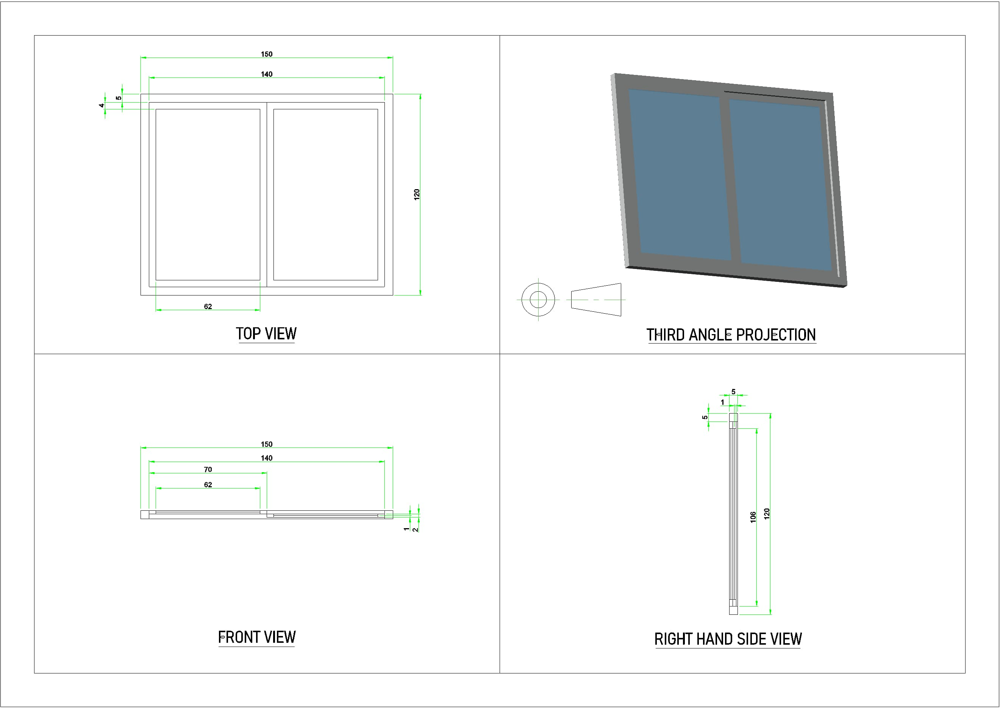

Aluminium Sliding Window For Fabrication
This project is based on the design and fabrication of a sliding window model. I made this project for a local fabrication shop to understand how mechanical drawings are converted into real-world structures.

About Project
I started by measuring the frame dimensions and planning the sliding mechanism. Using AutoCAD, I created a 2D drawing with accurate frame personally visiting at local shop to get proper dimension and measurement shop owner wanted of rail, and panel details. Later using these drawings shop used during the actual fabrication process to cut and assemble the materials properly.
Seeing the final product helped me understand how important precision is in drafting. Even small changes in measurements can affect the fitting and smooth movement of the window panels.
This project gave me practical experience in working with fabrication drawings and improved my confidence in preparing accurate plans for real aluminium manufacturing work.